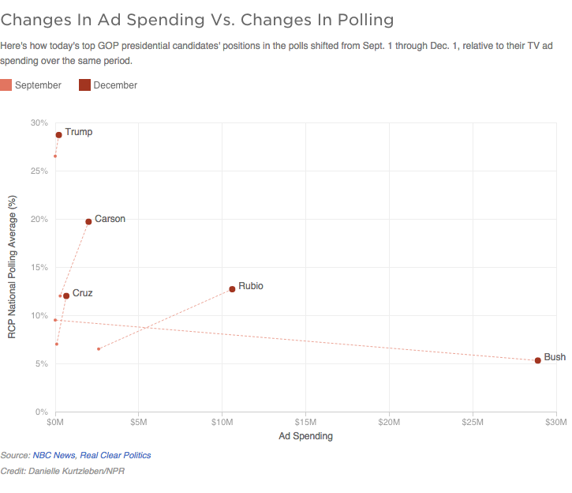

Here's how today's top GOP presidential candidates' positions in the polls shifted from Sept. 1 through Dec. 1, relative to their ad spending over the same period.

Notes
Numbers reflect spending both by outside groups and campaigns, and only on ads that had aired by September 1 or December 1, respectively.